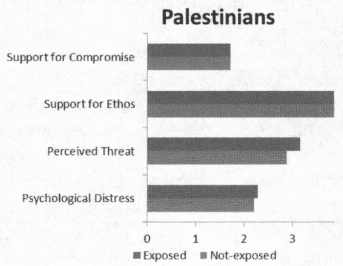
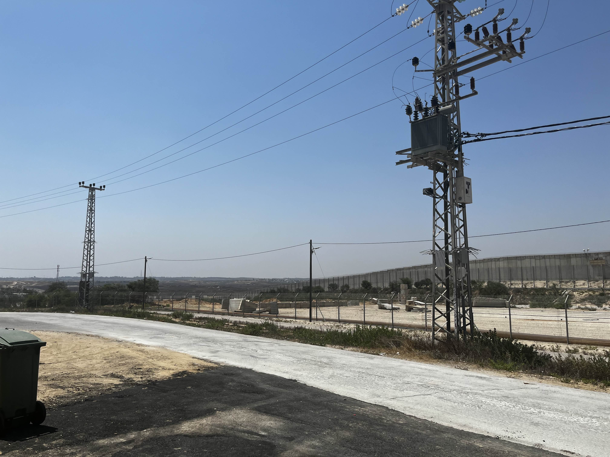

Created by Joey Lieb
In The Boy Scouts of America, there is a motto we live by when going out to camp. It simply states: “Leave no trace.” It means that when you stay anywhere, you ensure the place you see looks better after leaving. In Judaism, the teachings of the religion actively weave a similar concept into their framework. It is called Tikun Olam, and it means to repair the world or essentially leave it better than when you found it. This concept of Judaism has stuck with me as I traversed through difficult times. This similarity leads me to my stance regarding a two-state solution between Israel, the homeland of the Jewish people, and Palestine. I have been to Israel twice, and each time, I was with an organization specifically focused on providing diverse and provocative perspectives on the conflict. I could step foot on the Temple Mount, a foundation of sacred religious buildings from Al-Aqsa Mosque to the first and second holy Jewish temples, additionally given the ability to visit an Israeli kibbutz residing directly next to the Gaza Strip. Walking through the trees planted in honor of the victims of the October 7th massacre while hearing artillery and gunfire from the war taking place simply one hundred feet from where I stood. Being able to experience such a foreign aspect led me to push towards the idea of a two-state solution between Israel and Palestine, which I ultimately believe is realistic. Researching the possibility of a two-state solution increased my faith in said framework because I could isolate the current boundaries preventing peace. As the war continues in the Middle East, it becomes ever more crucial to reach a long-term solution to prevent additional victims on each side.
The land of Israel can be traced back to 4000+ years ago. The land transformed owners numerous times until, notably when the second temple was destroyed in 70 CE, the one that rested on Temple Mount. Exiled Jews in the Diaspora always longed to return to Zion or Israel. In the following two thousand years, land ownership can be summed up as the Romans from (70 CE - 324 CE) to, most notably, the Ottoman Empire (1517–1917 CE). The Ottomans ruled consistently over modern-day Israel for the most extended time. Instead of focusing on local development, the land was treated more for extra agriculture. The land was administratively part of the Ottoman Province of Syria; however, it was locally referred to as “Filastin” in Arabic and “Eretz Yisrael” in Hebrew. The demographics during this ruling were predominantly Sunni Arab Muslims, followed by Christians, and then Jews. During the late 19th century, a political figure in Europe named Theodore Herzl argued that the solution to increasing antisemitism was immigration to Palestine. Herzl attempted to persuade the Sultan of the Ottoman Empire, which was rejected. This led to the creation of the term Zionism, making the first Zionist Conference in Switzerland in 1897. It was discussed how land could be purchased for the Jewish Homeland. Even with the failure of Herzl at the time, it still paved a path for Zionists in the 1940s after the Holocaust to Palestine.
After World War 1, the Ottoman Empire was dismantled, leading the League of Nations to give the land of Palestine to Britain, calling it the Mandate of Palestine. Because of Britain’s desire for support from Zionist leaders, they declared Palestine as a homeland for the Jewish people. A noticeable spike in Jewish immigration to Palestine followed. Motivation for immigration grew after the Holocaust because Jews did not feel safe in Europe, leading to leaders like David Ben-Gurion pushing for a completely independent state for the Jewish people. In 1947, Britain asked the UN for assistance regarding troubles in Palestine. The UN devised a partition plan where Jews would get their land alongside the Arabs. The Arabs denied this plan because the Jews were getting more land, viewing themselves as having original claims and fearing a decline in Indigenous Arab representation. After the UN Partition Plan proposal in 1947, civil war broke out in the mandate, causing Britain to withdraw. The State of Israel was created in 1948, a day before the withdrawal. Because of the Declaration of Independence, neighboring Arab countries proceeded to invade. During the war, hundreds of thousands of Palestinians were expelled or killed, known as the Nakba.
Over the past seventy years of Israeli occupation in Palestinian territories, it is vital to take note of the political and discordant discrepancies that occur for civilians and how that will impact their final stance on a two-state solution. In a 2017 survey done on Palestinians and Israelis by Daphna Canetti in Exposure to Violence, Ethos of Conflict, and Support for Compromise: Surveys in Israel, East Jerusalem, West Bank, and Gaza, it was recorded that exposure to violence from Israeli attacks ranged from zero to three. It was additionally reported that Palestinians exposed to the conflict perceived Israel more as a threat; however, they equally wanted to compromise the same amount as those not exposed to violence. In the study, Palestinians reported a significant increase in exposure to violence compared to Israelis, with a t-value of -21.99 (Canetti 104). This data goes hand-in-hand with the willingness to compromise with a t-value of 12.67 (Canetti 104), with the Israelis leading in. This demonstrates that the more exposure to violence, the less there is willingness to compromise. A similar study was made in the article: Conflict Will Harden Your Heart: Exposure to Violence, Psychological Distress, and Peace Barriers in Israel and Palestine by Sivan Hirsch-Hoefler. The t-value for Psychological distress was 77.22 (Hirsch-Hoefler 852), with Palestinians leading, while the t-value for compromise was -15.92 (Hirsch-Hoefler 852). Following this pattern, it can be concluded that reducing the violence in Gaza and the West Bank will make significant strides in increasing attitudes toward compromise. I agree with why Palestinians may seem hesitant or practically against peace. When living in situations of unstable governments and violence, it is easy to have a conflicted view on what could be helpful long-term vs. short-term.
In the previous studies listed above, it is easy to note that the willingness to compromise with Palestine is relatively high compared to Palestinians. This can be explained by the decrease in violence experienced by Israelis. The technological difference between Palestine and Israel is vast. With the Pikud HaOref, Israel can be notified exactly when a strike is launched and what kind of strike it is. Not only are the Israelis notified, but they are also protected with advanced anti-rocket systems. These include, but are not limited to, The Iron Dome, David’s Sling, and Arrow 2 & 3. The revolutionary systems put in place impact the mindset of an Israeli on a day-to-day basis. When I spoke to IDF soldiers, they told me that occasionally, they might not feel like going to the bomb shelter during an alarm because they had “too long of a day at work.” This is a common mantra in Israeli culture, and it is the sole reason the population is more willing to compromise with Palestinians. It, however, is essential to note that Israelis closer to Gaza have a more vigorous reaction against peace. Since more Israelis reside further away, these reactions are seen as outliers. My reaction to the Zionist movement is conflicted. For me, Jewish self-determination has always been a must. Still, the Israeli side's steps to reach it have been questionable, especially given their advantage in the Levant region. With the ongoing 2023 Hamas-Israel war, it has been apparent the reckless choices made by those in the government and military operations in Gaza. That said, it is still essential for a homeland in Israel.
It is easy to conclude that Israel and Palestine will never reach a state of peace; they never have since 1948. Nevertheless, looking at what steps can be taken in the future guides a path to peace. These steps can be summed up as increasing education worldwide on the unbiased truth of the conflict. A friend in Kurdistan-controlled Iraq notes: “State-funded schools here generally teach little about Israel or Jews [the] focus is on history, religion, and geopolitics. Jews are often portrayed historically but less in modern terms.” (30hn, personal communication, December 15, 2024). Education matters not only globally but also locally in Palestine and Israel. If both sides can be on an even playing field of facts, it increases the likelihood of mutual self-interest (Roth 5). The next step is a ceasefire. While controversial for Israelis due to the hostages still in Gaza, a ceasefire can reduce the tension getting in the way of any sort of essential hostage deals. Police do not shoot at the criminal while hostages are being discussed. Lastly, land must be sacrificed on both sides to garner a working deal. Israelis and Palestinians both want self-determination; it has been their goal for decades. Allowing access to Jerusalem, the holy site of their religions, and enough land to house the culture are essential properties to each side, all of which can be met with enough compromise and work. The main goal is leveling out the t-value on psychological distress and willingness to compromise towards 0. This would mean an equal perspective.
As I researched for this project, it was very easy to build a picture in my head of why Palestinians are resistant to any sort of peace with Israel; after looking at the statistics before, I was confused and most annoyed about why they could not just accept some kind of a peace deal. It is easy for an American Jew to stay biased toward Israel; however, research can prove effective in balancing the bias by keeping an open mind about the conditions in Palestine and how they differ in residing in Israel, something I did for a total of 20 days. I felt completely safe during those 20 days, half during a war. I cannot say I would feel the same if I spent 10 days in Gaza during the war. Questions remain on how to handle the complex situation in Jerusalem. It is suggested that someone like the UN manages it, but that can still bring controversy, especially with the recent issues with UNRWA. I am looking towards the Israel-Palestine conflict course offered at my university to expand my knowledge further on this topic.
Canetti, Daphna, et al. “Exposure to Violence, Ethos of Conflict, and Support for Compromise: Surveys in Israel, East Jerusalem, West Bank, and Gaza.” The Journal of Conflict Resolution, vol. 61, no. 1, 2017, pp. 84–113. JSTOR, http://www.jstor.org/stable/26363906. Accessed 16 Nov. 2024.
HIRSCH-HOEFLER, SIVAN, et al. “Conflict Will Harden Your Heart: Exposure to Violence, Psychological Distress, and Peace Barriers in Israel and Palestine.” British Journal of Political Science, vol. 46, no. 4, 2016, pp. 845–59. JSTOR, http://www.jstor.org/stable/26353818. Accessed 16 Nov. 2024.
Roth, Brad R. "Implementing "Two Peoples, One Future": Conceptualizing Mutual Self-Determination in Israel-Palestine." Europa Ethnica, vol. 80, no. 1, 2023, pp. 79-87. ProQuest, https://www.proquest.com/scholarly-journals/implementing-two-peoples-one-future/docview/2849363145/se-2?accountid=13626.
Masao Dahlgren, "Israel Tests Multiple Missile Defense Systems," Missile Threat, Center for Strategic and International Studies, December 15, 2020, last modified December 15, 2020, https://missilethreat.csis.org/israel-tests-multiple-missile-defense-systems/.